数据结构与算法
兄弟萌，距离数据结构与算法考试只剩十几天了。具体多少天我也不清楚，但是我觉得从现在开始复习还不晚。因为上课基本不听，都在自学，当然了，最主要还是听不懂，所以对待这种考试还是有必要冲一冲的，毕竟，我可不想挂科，下一年还要再听一次天书。
为了让我的复习之路不那么枯燥，我决定把复习过程中的知识点记录下来，并且还能以防日后忘记拿来温习温习，并且还能为博客增添内容，岂不三全其美。
对了，我复习参考的内容主要是B站小甲鱼老师的教程，链接在此
OK，正片开始。
Day0
算法的特性
- 输入：算法具有零个或多个输入。
- 输出：算法至少有一个或多个输出。
- 有穷性：算法在执行有限的步骤之后，自动结束而不会出现无限循环，并且每一个步骤在可接受的时间内都可以完成。一个永远都不会结束的算法，我们还要他来干啥？
- 确定性：
- 算法的每一个步骤都具有确定的含义，不会出现二义性。
- 算法在一定条件下，只有一条执行路径，相同的输入只能有唯一的输出结果（这里的一定条件应该就是相同输入）。
- 可行性：算法的每一步都必须是可行的，也就是说，每一步都能够通过执行有限次数完成。
算法设计要求
- 正确性：
- 算法的正确性是指算法至少应该具有输入、输出和加工处理无歧义性、能够正确反映问题的需求、能够得到问题的正确答案。
- 大体分为以下四个层次：
- 算法程序没有语法错误。
- 算法程序对于合法输入能够产生满足要求的输出。
- 算法程序对于非法输入能够产生满足要求的说明。
- 算法程序对于故意刁难的测试输入都有满足要求的输出结果。（操作系统的缓冲区溢出）
- 可读性：
- 算法设计另一目的是为了便于阅读、理解和交流。
- 我们写代码的目的，一方面是为了让计算机执行，但还有一个重要的目的是为了便于他人阅读和自己日后阅读修改。
- 健壮性：当输入数据不合法时，算法也能做出相关处理，而不是产生异常、崩溃或莫名其妙的结果。
- 时间效率高和存储空间小。
算法效率的度量方法（准备环节）
- 事后统计方法：这种方法主要是通过设计好的测试程序和数据，利用计算机计时器对不同算法编制的程序的运行时间进行比较，从而确定算法效率的高低。
- 事前分析估算方法：在计算机程序编写前，依据统计方法对算法运行时间进行估算。
如果非常较真的研究总共精确执行次数，那是非常累的。
另一方面，我们研究算法的复杂度，侧重的是研究算法随着输入规模扩大的增长量的抽象，而不是精确地定位需要执行多少次，因为如果这样的话，我们就又得考虑回编译器优化等问题，然后，然后就永远也没有然后了！
我们不关心编写程序所用的语言是什么，也不关心这些程序将跑在什么样的计算机上，我们只关心它所实现的算法。
这样，不计那些循环索引的递增和循环终止条件（判断）、变量声明、打印结果等操作。最终，在分析程序的运行时间时，最重要的是把程序看成是独立于程序设计语言的算法或一系列步骤。
我们在分析一个算法的运行时间时，重要的是把基本操作的数量和输入模式关联起来
直接上结论吧，判断一个算法的效率时，函数中的常数和其它次要项常常可以忽略，而更应该关注主项（最高项）的阶数。
请注意：判断一个算法好不好，只通过少量的数据是不能做出准确判断的，很容易以偏概全。所以测试时数据一定要多，越多越精确。^_^
Day1
算法时间复杂度
定义
在进行算法分析时，语句总的执行次数T(n)是关于问题规模n的函数，进而分析T(n)随n的变化情况并确定T(n)的数量级。算法的时间复杂度，也就是算法的时间量度，记作：T(n) = O(f(n))。它表示随问题规模n的增大，算法执行时间的增长率和f(n)的增长率相同，称作算法的渐进时间复杂度，简称为时间复杂度。其中f(n)是问题规模n的某个函数。
关键需要知道执行次数==时间
- 这样用大写O()来体现算法时间复杂度的记法，我们称之为大O记法。
- 一般情况下，随着输入规模n的扩大，T(n)增长最慢的算法为最优算法。
- 三个求和算法的时间复杂度O(1)（高斯算法）, O(n), O(n^2)
推导大O阶方法
攻略如下下：
- 用常数1取代运行时间中的所有加法常数。
- 在修改后的运行次数函数中，只保留最高阶项。
- 如果最高阶项存在且不是1，则去除与这个项相乘的常数。
- 得到的最后结果就是大O阶。
Day2
常见的时间复杂度
- 常见的时间复杂度所耗费的时间从小到大依次是：O(1) < O(logn) < O(n) < O(nlogn) < O(n^2) < O(n^3) < O(2^n) < O(n!) < O(n^n)
- 而像O(n^3)之后的这些，由于n值的增大都会使得结果大得难以想象，我们没必要去讨论它们。谁用谁傻B。
最坏情况与平均情况
- 我们查找一个有n个随机数字数组中的某个数字，最好的情况是第一个数字就是，那么算法的时间复杂度为O(1)，但也有可能这个数字就在最后一个位置，那么时间复杂度为O(n)。
- 平均运行时间是期望的运行时间。
- 最坏运行时间是一种保证。在应用中，这是一种最重要的需求，通常除非特别指定，我们提到的运行时间都是最坏情况的运行时间。
算法的空间复杂度
- 算法的空间复杂度通过计算算法所需的存储空间实现，算法的空间复杂度的计算公式记作：S(n)=O(f(n))，其中n为问题的规模，f(n)为语句关于n所占存储空间的函数。
- 通常，我们都是用“时间复杂度”来指运行时间的需求，是用“空间复杂度”指空间需求。（这句话据说经常考，但咱也不知道为什么^_^）
- 当直接要让我们求“复杂度”时，通常指的是时间复杂度。
- 显然对时间复杂度的追求更是属于算法的潮流。
线性表的定义
- 线性表（List）：由零个（空表）或多个数据元素组成的有限序列。
- 敲黑板了
- 首先它是一个序列，也就是说元素之间是有个先来后到的，像刚才的小蝌蚪就没有顺序。
- 若元素存在多个，则第一个元素无前驱，而最后一个元素无后继，其他元素都有且只有一个前驱和后继。
- 另外，线性表强调是有限的，事实上无论计算机发展到多强大，它所处理的元素都是有限的。
- 数学语言的定义：（还得是我数学哥啊）
- 若将线性表记为（a1, …, ai-1, ai, ai+1, …,an），则表中ai-1领先于ai，ai领先于ai+1，称ai-1是ai的直接前驱元素，ai+1是ai的直接后继元素。
- 线性表的个数n(n>=0)定义为线性表的长度，当n=0时，称为空表。
抽象数据类型
数据类型
- 官方定义：是指一组性质相同的值的集合及定义在此集合上的一些操作的总称。
- 例如很多编程语言的整型，浮点型，字符型这些指的就是数据类型。
- 例如在C语言中，按照取值的不同，数据类型可以分为两类：
- 原子类型：不可以再分解的基本类型，例如整型、浮点型、字符型等。
- 结构类型：由若干个类型组合而成，是可以再分解的，例如整型数组就是由若干整形数据组成的。
抽象数据类型
- 抽象：是指抽取出事物具有的普遍性的本质。它要求抽出问题的特征而忽略非本质的细节，是对具体事物的一个概括。抽象是一种思考问题的方式，它隐藏了繁杂的细节。
- 我们对已有的数据类型进行抽象，就有了抽象数据类型。
- 抽象数据类型（Abstract Data Type, ADT）是指一个数学模型及定义在该模型上的一组操作。（是不是有点像类呢）
- 抽象数据模型的定义仅取决于它的一组逻辑特性，而与其在计算机内部如何表示和实现无关。
- 比如1+1=2这样一个操作，在不同CPU的处理上可能不一样，执行的指令数量可能不一样，但由于其定义的数学特性相同，所以在计算机编程者看来，它们都是相同的。
- “抽象数据类型”的意义在于数据类型的数学抽象特性。
- 而且，抽象数据类型不仅仅指那些已经定义并实现的数据类型，还可以是计算机编程者在设计软件程序时自己定义的数据类型。
- 例如一个3D游戏中，要定位角色的位置，那么总会出现x, y, z三个整型数据组合在一起的坐标。我们就可以定义一个point的抽象数据类型，它拥有x, y, z三个整型变量，这样我们就可以方便的对一个角色的位置进行操作。
- 为了便于在之后的讲解中对抽象数据类型进行规范的描述，我们给出了描述抽象数据类型的标准格式：（伪代码）
1 | ADT 抽象数据类型名 |
Day3
线性表的抽象数据类型
总结下线性表的抽象数据类型定义：
ADT 线性表（List）
Data
2
3
4
5
有且只有一个直接前驱元素，除了最后一个元素an外，每一个元素有且只有一个直接后继元素。数据元素之间是
一对一的关系。Operation
2
3
4
5
6
7
8
9
10
11
12
13
14
15
16
17
ListEmpty(L)：判断线性表是否为空表，若线性表为空表，返回true，否则返回false。
ClearList(L, i, *e)：将线性表L中的第i个位置元素值返回给e。
GetElem(L, i, *e)：将线性表L中的第i个位置元素值返回给e。
LocateElem(L, e)：在线性表L中查找与给定值e相等的元素，如果查找成功，返回该元素在表中序号表示成功；否
则，返回0表示失败。
ListInsert(*L, i, e)：在线性表中第i个位置插入新元素e。
ListDelete(\*L, i，\*e)：删除线性表L中第i个位置元素，并用e返回其值。
ListLength(L)：返回线性表L的元素个数。endADT
对于不同的应用，线性表的基本操作是不同的，上述操作是最基本的，对于实际问题中涉及的关于线性表的更复杂操作，完全可以用这些基本操作的组合来实现。
1 | // La表示A集合，Lb表示B集合。 |
Day4
线性表的顺序存储结构
- 接下来看线性表顺序存储的结构代码：
1 | #define MAXSIZE 20 |
- 总结下，顺序存储结构封装需要三个属性：
- 存储空间的起始位置，数组data，它的存储位置就是线性表存储空间的存储位置。
- 线性表的最大存储容量：数组的长度MaxSize。
- 线性表的当前长度：length。
- 注意：数组的长度与线性表的当前长度需要区分一下，数组的长度是存放线性表的存储空间的总长度，一般初始化后不变。而线性表的当前长度是线性表中元素的个数，是会变化的。
地址计算方法
- 假设ElemType占用的是c个存储单元（字节），那么线性表中第i+1个数据元素和第i个数据元素的存储位置的关系是（LOC表示获得存储位置的函数）：LOC(ai+1) = LOC(ai) + c
- 所以对于第i个数据元素ai的存储位置可以由ai推算得出：LOC(ai) = LOC(a1) + (i-1) * c
- 通过这个公式，我们可以随时计算出线性表中任意位置的地址，不管它是第一个还是最后一个，都是相同的时间。那么它的存储时间性能当然就为O(1)，我们通常称为随机存储结构。
获得元素操作
实现GetElem的具体操作，即将线性表L中的第i个位置元素返回。就程序而言就非常简单了，我们只需要把数组第i-1下标的值返回即可。
1 | #define OK 1 |
插入操作
- 刚才我们谈到，线性表的顺序存储结构具有随机存储结构的特点，时间复杂度为O(1)。
删除操作
1 | Status ListDelete(SqList *L, int i, ElemType *e) |
- 最好的情况：插入和删除操作刚好要求在最后一个位置操作，因为不需要移动任何元素，所以此时的时间复杂度为O(1)。
- 最坏的情况：如果要插入和删除的位置是第一个元素，那就意味着要移动所有的元素向后或者向前，所以这个时间复杂度为O(n)。
- 至于平均情况，就取中间值O((n-1)/2)。
- 简化之后平均情况复杂度还是O(n)。
线性表顺序存储结构的优缺点
- 线性表的顺序存储结构，在存、读数据时，不管是哪个位置，时间复杂度都是O(1)。而在插入或删除时，时间复杂度都是O(n)。
- 这就说明，它比较适合元素个数比较稳定，不经常插入和删除元素，而更多的操作是存取数据的应用。
- 优点：
- 无需为表示表中元素之间的逻辑关系而增加额外的存储空间。
- 可以快速地存取表中任意位置的元素。
- 缺点：
- 插入和删除操纵经常需要移动大量元素。
- 容易造成存储空间的“碎片”。（因为是一整块申请的）
- 当线性表长度变化较大时，难以确定存储空间的容量。（暂时还不理解^_^）
线性表的链式存储结构
线性表链式存储结构定义
- 线性表的链式存储结构的特点是用一组任意的存储单元存储线性表的数据元素，这组存储单元可以存在内存中未被占用的任意位置。
- 比起顺序存储结构每个数据元素只需要存储一个位置就可以了。在链式存储结构中，除了要存储数据元素信息外，还要存储它的后继元素的存储地址（指针）。
- 也就是说除了存储其本身的信息外，还需存储一个指示其直接后继的存储位置的信息。
- 我们把存储数据元素信息的域称为数据域，把存储直接后继位置的域称为指针域。指针域中存储的信息称为指针或链。这两部分信息组成的数据元素称为存储映像，称为结点（Node）。
- n个结点链接成一个链表，即为线性表（a1, a2, a3, …, an）的链式存储结构。
- 因为此链表的每个结点中只包含一个指针域，所以叫做单链表。
- 对于线性表来说，总得有个头有个尾，链表也不例外。我们把链表中的第一个结点的存储位置叫做头指针，最后一个结点的指针指向空（NULL）.
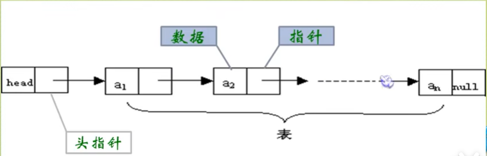
单链表存储结构
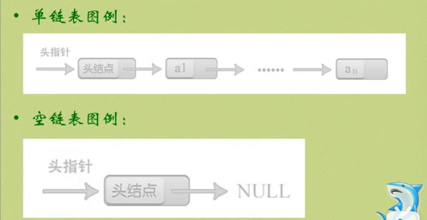
我们在C语言中可以用结构指针来描述单链表。
1 | typedef struct Node |
单链表的读取
1 | // 初始条件：顺序线性表L已存在，1<=i<=ListLength(L) |
Day5
栈的定义
- 栈是一种重要的线性结构，可以这样讲，栈是前面讲过的线性表的一种具体形式。
- 就像我们刚才的例子（弹夹装子弹），栈这种后进先出的数据结构应用是非常广泛的。在生活中，例如我们的浏览器，每点击一次“后退”都是退回到最近的一次浏览网页。
- 官方定义：栈（Stack）是一个后进先出（Last in first out, LIFO）的线性表，它要求只在表尾进行删除和插入操作。
- 小甲鱼定义：所谓的栈，其实也就是一个特殊的线性表（顺序表、链表），但是它在操作上有一些特殊的要求和限制：
- 栈的元素必须“后进先出”。
- 栈的操作只能在这个线性表的表尾进行。
- 注：对于栈来说，这个表尾称为栈的栈顶（top），相应的表头称为栈底（bottom）。
栈的插入和删除操作
- 栈的插入操作（Push），叫做进栈，也称为压栈，入栈。类似子弹放入弹夹的动作。
- 栈的删除操作（Pop），叫做出栈，也称为弹栈。如同弹夹中的子弹出夹。
栈的顺序存储结构
- 因为栈的本质是一个线性表（一种特殊的线性表），线性表有两种存储形式，那么栈也分为栈的顺序存储结构和栈的链式存储结构。
- 最开始栈中不含有任何数据，叫做空栈，此时栈顶就是栈底。然后数据从栈顶进入，栈顶和栈底分离，整个栈的当前容量变大。数据出栈时从栈顶弹出，栈顶下移，整个栈的当前容量变小。
1 | typedef struct |
- 这里定义了一个顺序存储的栈，它包含了三个元素：base, top, stackSize。其中base是指向栈底的指针变量，top是指向栈顶的指针变量，stackSize指示栈的当前可使用的最大容量。
创建一个栈
1 | #define STACK_INIT_SIZE 100 |
入栈操作
- 入栈操作又叫压栈操作，就是向栈中存放数据。
- 入栈操作要在栈顶进行，每次向栈中压入一个数据，top指针就要+1，直到栈满为止。
1 | #define SATCKINCREMENT 10 |
出栈操作
- 出栈操作就是在栈顶取出数据，栈顶指针随之下移的操作。
- 每当从栈内弹出一个数据，栈的当前容量就-1
- 代码清单：
1 | Pop(sqStack *s, ElemType *e) |
Day6
疑问解释
- 上节课我们讲解栈的结构，我们是这样声明的：
1 | typedef int ElemType; |
- 有些朋友提出了疑问：怎么没有data元素存放数据？怎么会有两个ElemType元素？
- 其实如果小甲鱼按照套路出牌，我们完全可以这样子声明：
1 | typedef int ElemType; |
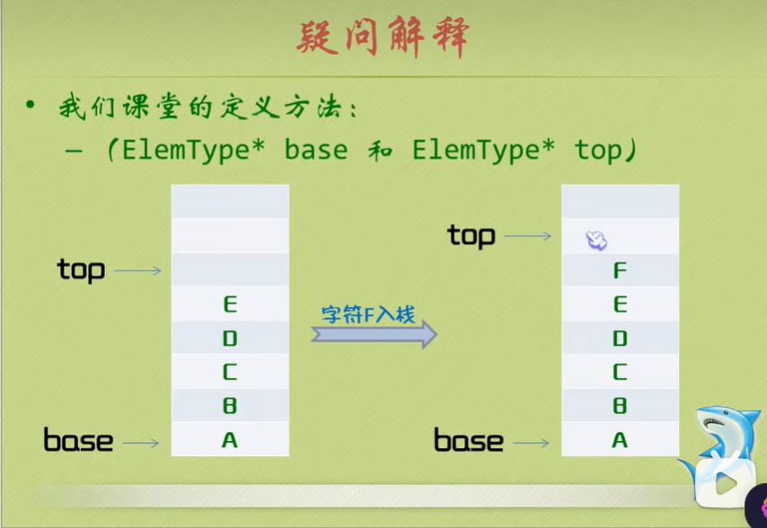

清空一个栈
- 所谓清空一个栈，就是将栈中的元素全部作废，但栈本身物理空间并不发生改变（不是销毁）。
- 因此我们只要将s->top的内容赋值为s->base即可，这样s-base等于s->top，也就表明这个栈是空的了。这个原理跟硬盘高级格式化只是单纯地清空文件列表（硬盘中各个文件的指针）而没有覆盖硬盘的原理是一样的。
- 代码清单：
1 | ClearStack(sqStack *s){ |
销毁一个栈
- 销毁一个栈与清空一个栈不同，销毁一个栈是要释放掉该栈所占据的物理内存空间，因此不要把销毁一个栈与清空一个栈这两种操作混淆。
- 代码清单
1 | DestroyStack(sqStack *s){ |
计算栈的当前容量
- 计算栈的当前容量也就是计算栈中元素的个数，因此只要返回s.top-s.base即可。
- 注意，栈的最大容量是指该栈占据内存空间的大小，其值是s.stackSize，它与栈的当前容量不是一个概念哦。
- 代码清单：
1 | int StackLen(sqStack s){ |
实例分析
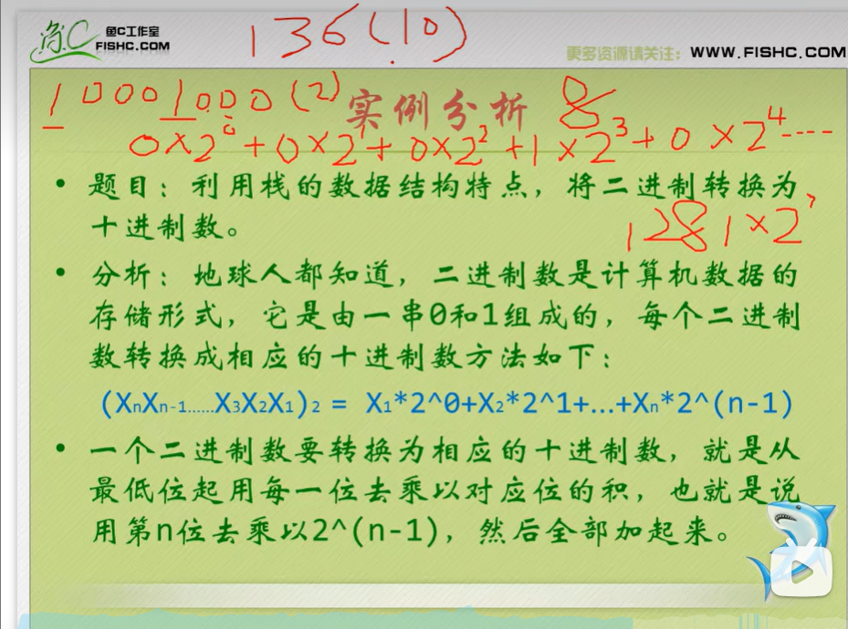
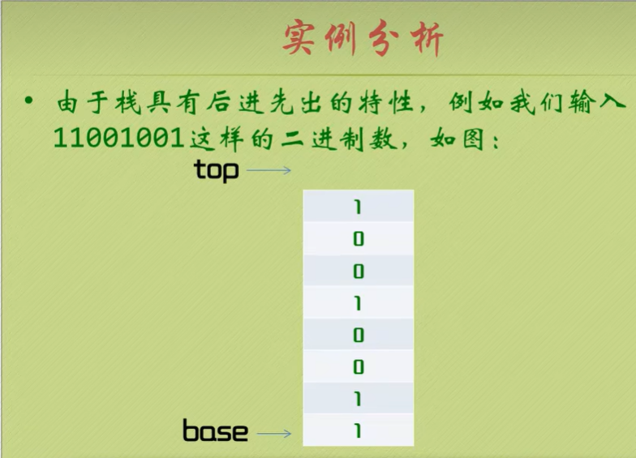
1 |
|
从二进制到八进制
- 地球人都知道，我们学习编程常常会接触到不同进制的数，而最多的就是二进制、八进制、十进制、十六进制。
- 鱼C人还知道，二进制是计算机唯一认识的，十进制是人们通常使用的。
- 那么，有没有谁知道八进制和十六进制呢？为什么没有三进制、四进制、五六七进制呢？
- 嗯，我们仔细观察二进制跟十六进制的对应关系：

- 可见一个字节（8bit）刚好用两个十六进制数可以表示完整，也大大地节省了显示空间。
- 那八进制呢？因为早期的计算机系统都是三的倍数，所以用八进制比较方便。
- 我们发现了，在进行二进制到八进制的转换时，要将二进制数的每三位转换成一个八进制数来表示，然后按顺序输出即可。
- 对于文字描述不好理解的概念，我们就只能：
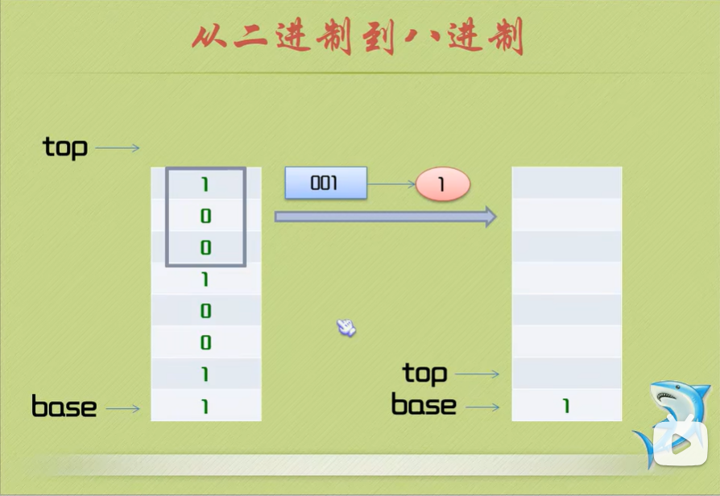
Day7
字符串
- 以前的计算机刚被发明的时候，主要作用是做一些科学和工程的计算工作。
- 刚开始的计算机都是处理数值工作，后来引入了字符串的概念，计算机开始可以处理非数值的概念了（当然原理还是用数值来模拟非数值，通过ASCII表）。
- 我们先来研究下“串”（字符串）这样的数据结构：
- 定义：串（String）是由零个或多个字符组成的有限序列，又名叫字符串。
- 一般记为s = “a1a2a3…an” (n>=0)
- 串可以是空串，即没有字符，直接由“”表示（注意里面没有空格哦~），或者可以用希腊字符Φ来表示（读fai，四声）。
- 子串与主串，例如“FishC”是“FishC.com”的子串，反之则倒过来。
字符串的比较
- 字符串比较大小跟传统的数字比较有点差别，很容易我们可以知道2比1要大，可要是“FishC”和“fishc.com”呢？要怎么比较？比长短？比大小？
- 比大小！没错，比的就是字符串里每个字符的ASCII码大小，因为’F’ == 70 ‘f’==102，‘f’>‘F’，所以"fishc.com" > “FishC”
- 其实这样的比较大小没有多大意义，字符串的比较我们更重视是否相等！
字符串的存储结构
- 字符串的存储结构与线性表相同，也分为顺序存储结构和链式存储结构。
- 字符串的顺序存储结构使用一组地址连续的存储单元来存储串中的字符序列的。
- 按照预定义的大小，为每个定义的字符串变量分配一个固定长度的存储区，一般用定长数组来定义。
- 与线性表相似，既然是固定长度的存储区，就存在一个空间分配不灵活的问题，那么会考虑用链式存储结构。
- 不同的是字符串我们一般都是连在一起表述的，“断章取义“的情况并不多，所以习惯上我们通常还是会直接定义一个足够长度的存储区来存储的。
BF算法
-
事实上，BF算法并不是“BoyFriend”算法的意思，他有一个很黄很暴力的原名：Brute Force
-
BF算法属于朴素（效率非常低）的模式匹配算法，它的核心思想是：
- 有两个字符串S和T，长度为N和M。首先S[1]和T[1]比较，若相等，则再比较S[2]和T[2]，一直到T[M]为止；若S[1]和T[1]不等，则S向右移动一个字符的位置，再依次进行比较。
- 该算法最坏情况下要进行M*(N-M+1)次比较，时间复杂度为O(M*N)
-
在这里S是主串，T是子串，这种子串的定位操作通常称作串的模式匹配。
Day8
-
KMP算法是三位老前辈（D.E.Knuth, J.H.Morris和V.R.Pratt）的研究成果，大大地避免了重复遍历的情况，全程叫做克努特-莫里斯-普拉特算法，简称KMP算法或看毛片算法。
-
KMP算法的核心就是避免不必要的回溯，那么什么是不必要的呢？问题由模式串决定，不是由目标决定！
思路启发
1
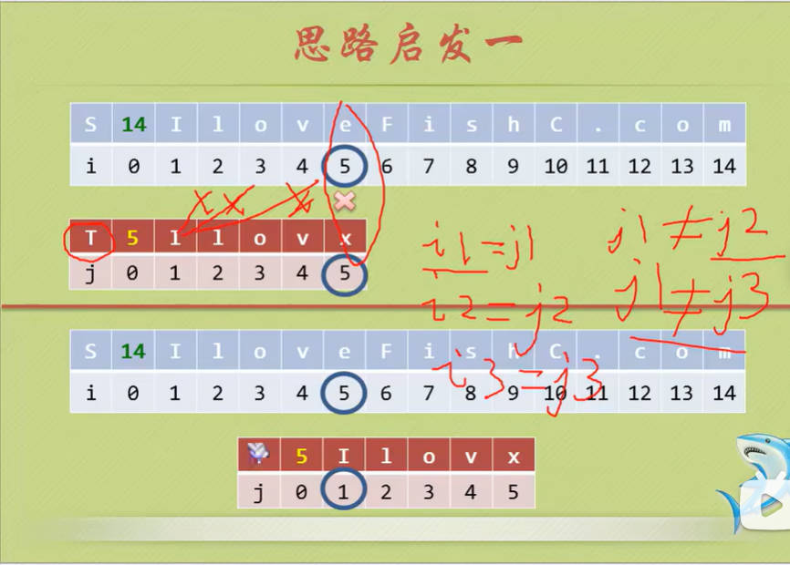
2
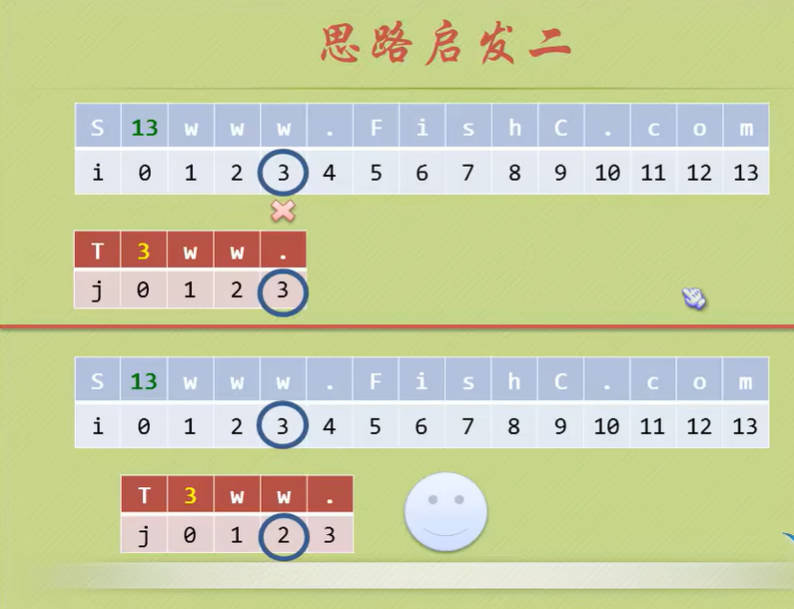
3
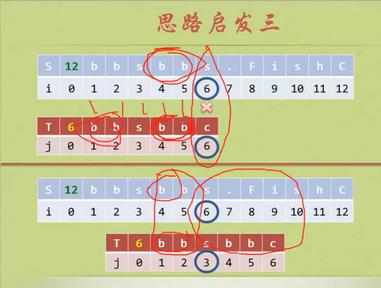
4
注重思考不要注重结果
对我很有启发，所以特地摘抄下来分享给各位！
- 如果平时有阅读鸟文（英文）计算机书籍的朋友会发现很多教学书籍都有课后习题，但大部分不会附带答案，世面也不会有所谓的“答案全解”。
- 其实在老外的教学中，他们更加注重思考而非正确的结果。回想我们之所以会这么在意答案完全是中国式教育的产物，在我们的学校，分数就是一切！
- 在小甲鱼的教学中，我希望大家可以培养独立思考的精神，因为这是创新的根源所在！
- 希望你们可以通过以上引导，自己推导出KMP算法的原理！
Day9(KMP算法之养成篇)
- 这次我们给模式匹配串添加一个k数组（也就是KMP算法书中的next数组）。
- 这是一个“智能”的数组，因为他指导着模式匹配串下一步改用第几号元素去进行匹配。
- 前缀和后缀的概念尤其重要，前缀和后缀是对于失配的位置来说的
- 第一个元素永远是前缀，失配的位置紧挨着的永远是后缀

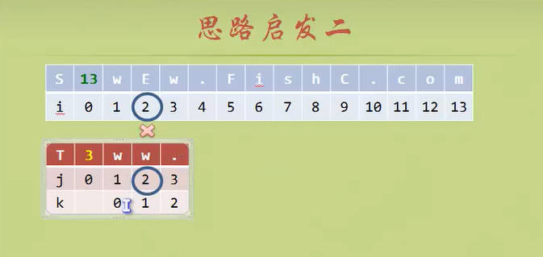
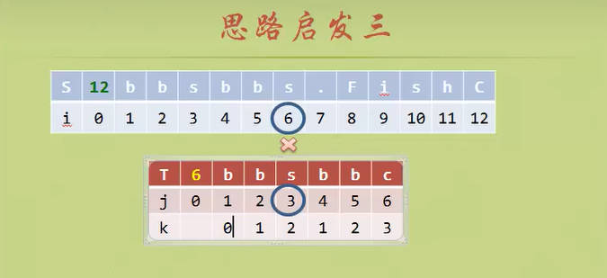
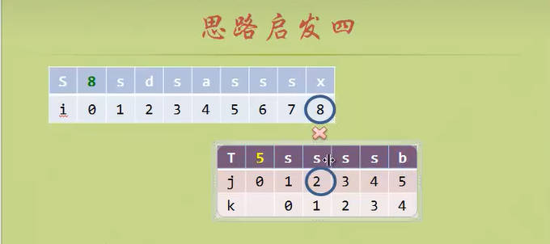
KMP算法之NEXT数组代码原理分析
NEXT数组：当模式匹配串T失配的时候，NEXT数组对应的元素指导应该用T串的哪个元素进行下一轮的匹配。（目标串S）
i (前缀)
j (后缀)
Day10
树的定义
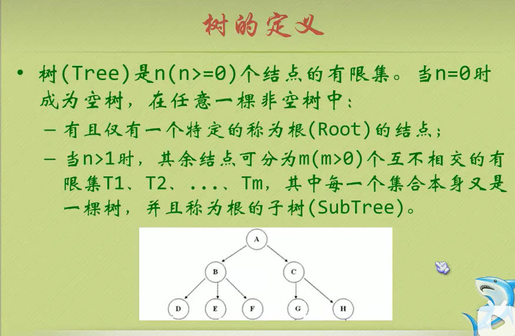
-
虽然从概念上很容易理解树，但是有两点还是需要注意下：
-
n>0时，根节点是唯一的，坚决不可能存在多个根节点。
-
m>0时，子树的个数是没有限制的，但它们互相之间是一定不会相交的。
-
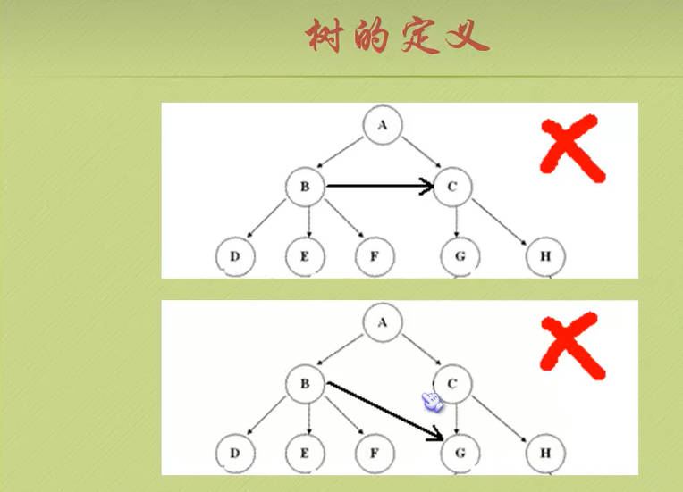
-
节点分类
- 刚才所有图片中，每一个圈圈我们就称为树的一个节点。节点拥有的子树数称为节点的度（Degree），树的度取树内各节点的度的最大值。
- 度为0的节点称为叶节点（Leaf）或终端节点；
- 度不为0的节点称为分支节点或非终端节点，除根节点外，分支节点也称为内部节点。
- 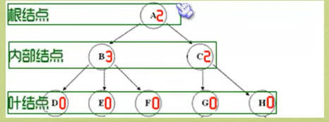
节点间的关系
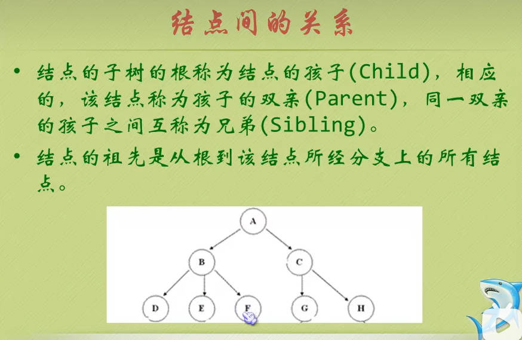
节点的层次
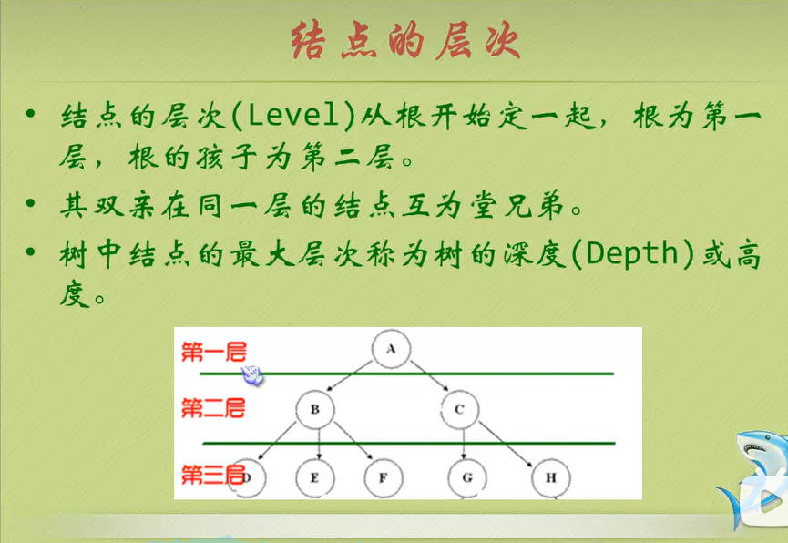
其他概念
- 如果将树中节点的各子树看成从左至右是有次序的，不能互换的，则称该树为有序树，否则称为无序树。
- 森林（Forest）是m(m>0)棵互不相交的树的集合。对树中的每个节点而言，其子树的集合即为森林。
Day11
树的存储结构
- 要存储树，简单的顺序存储结构和链式存储结构是不能滴！不过如果充分利用它们各自的特点，完全可以间接地来实现。
- 大家先思考下，如果你是总工程师，让你来设计和规划，你有多少种方法可以实现对树结构的存放？
- 当然你要考虑到双亲、孩子、兄弟之间的关系。
- 小甲鱼这里要介绍三种不同的表示法：双亲表示法、孩子表示法、双亲孩子表示法。
双亲表示法
-
双亲表示法，言外之意就是以双亲作为索引的关键词的一种存储方式。
-
我们假设以一组连续空间存储树的节点，同时在每个节点中，附设一个指示其双亲节点在数组中位置的元素。
-
也就是说，每个节点除了知道自己是谁之外，还知道它的粑粑麻麻在哪里。
-
那么我们可以做如下定义：
1 | // 树的双亲表示法节点结构定义 |
-
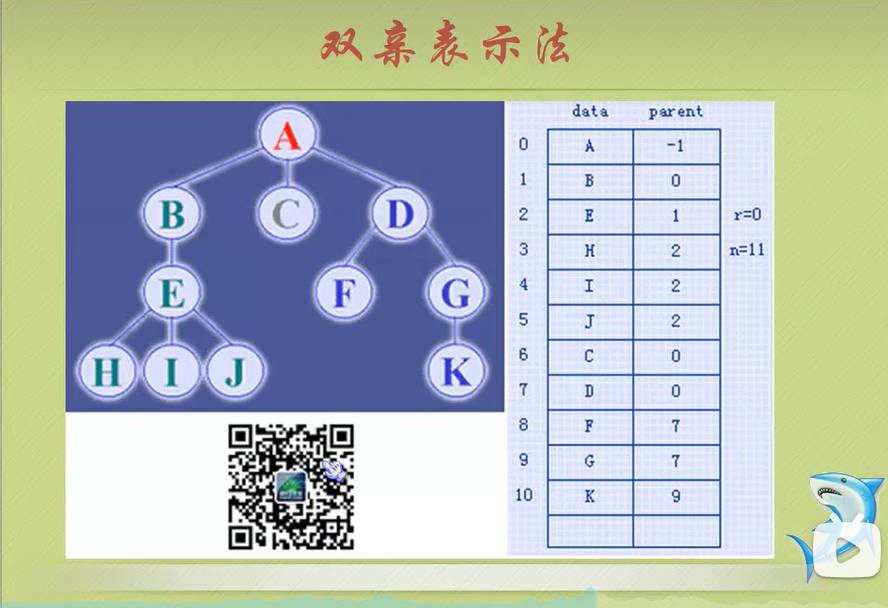
-
这样的存储结构，我们可以根据某节点的parent指针（这里也就是数组下标）找到它的双亲节点，所用的时间复杂度是O(1)，索引到parent的值为-1时，表示找到了树节点的根。
-
可是，如果我们要哦知道某节点的孩子是什么？那么不好意思，请遍历整个树结构。
-
这真是麻烦，能不能改进一下呢？
-
鱼友们怎么看？
-
电脑前的小盆友们怎么看？
-
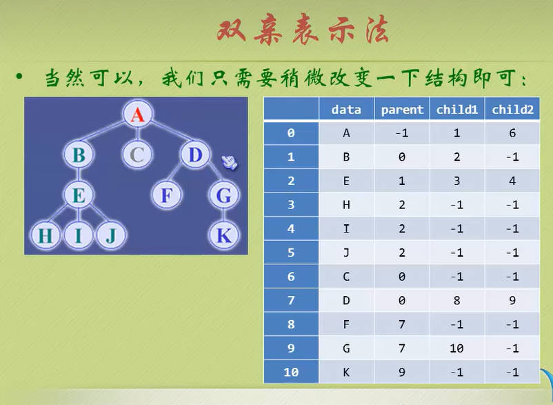
-
那现在我们又比较关心它们兄弟之间的关系呢？
- 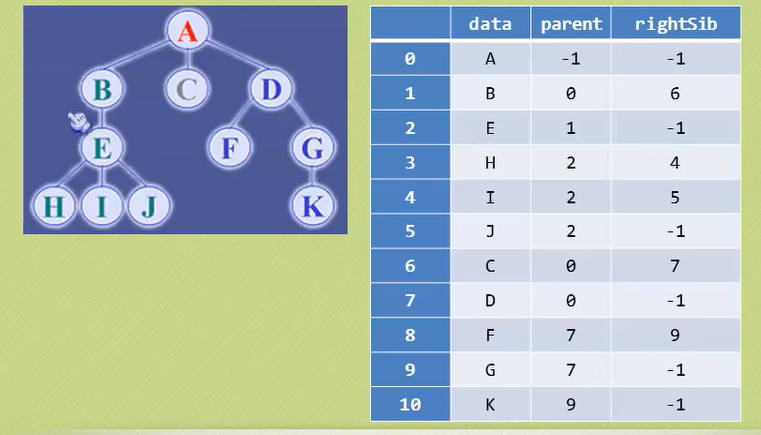
思考
- 存储结构的设计是一个非常灵活的过程，只要你愿意，你可以设计出任何你想要的奇葩！
- 一个存储结构设计得是否合理，取决于基于该存储结构的运算是否适合、是否方便，时间复杂度好不好等等。而不是取决于这个东西是否权威，从来没有权威这回事，只有更新换代。
- 不要拘泥于你所学过的有限的数据类型，像我们的Python脚本语言就没有任何数据类型。要把思维放开些，放开些，放开些！
- 当你的思维放开了，世界就变小了！
- 当你的思维放开了，知识就变少了！
孩子表示法
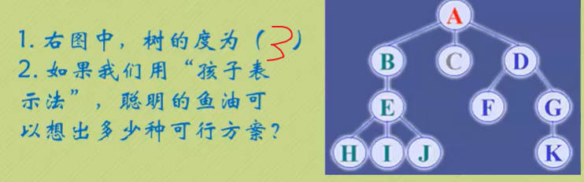
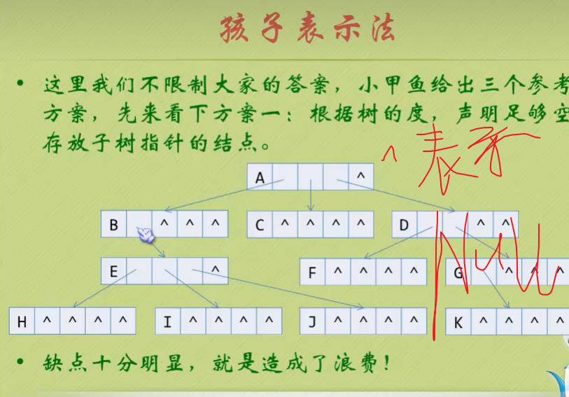
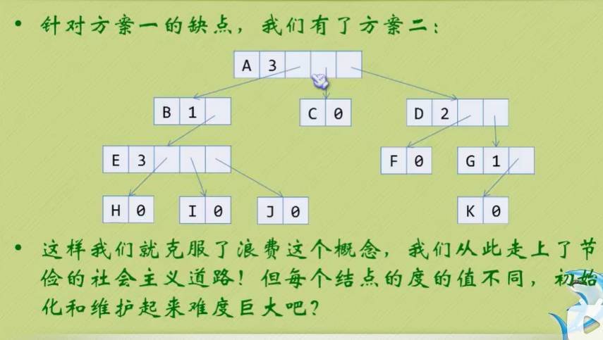
方案二主要是时间换空间
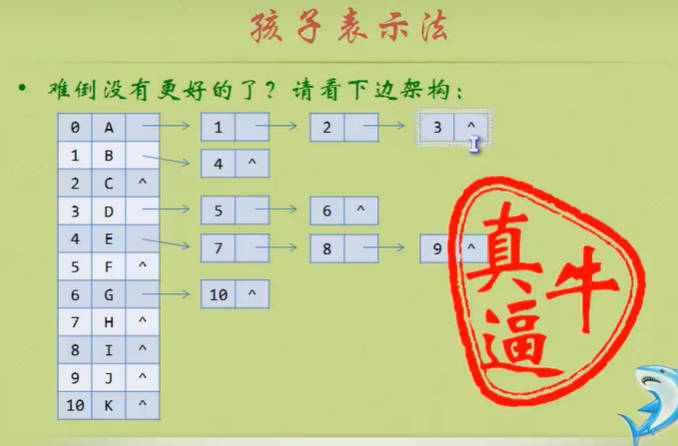
双亲孩子表示法
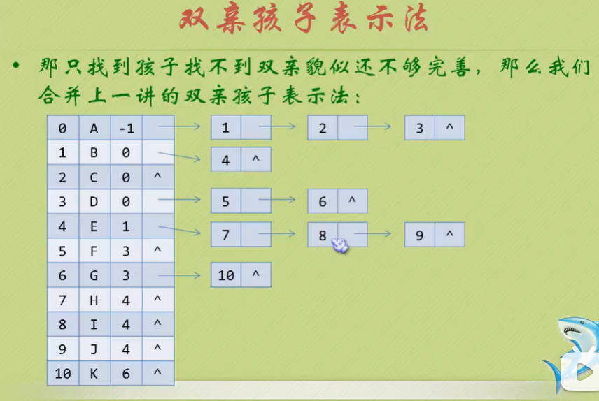
- 说了这么多，我们一起来把代码落实起来把！
- 最后还有一款是孩子兄弟表示法，构造方式也是大同小异，就交给大家课后去思考啦。
1 |
|
Day12
二叉树的定义
- 世上树有万千种，唯有二叉课上讲。这里的二叉是二叉树，因为二叉树使用的范围最广，最具有代表意义，因此我们重点讨论二叉树。
- 二叉树（Binary Tree）是n（n>=0）个节点的有限集合，该集合或者为空集（空二叉树），或者由一个根节点和两颗互不相交的、分别称为根节点的左子树和右子树的二叉树组成。
- 这个定义显然是递归形式的，所以咱看上去有点晕，因为自古有“神使用递归，人使用迭代！”
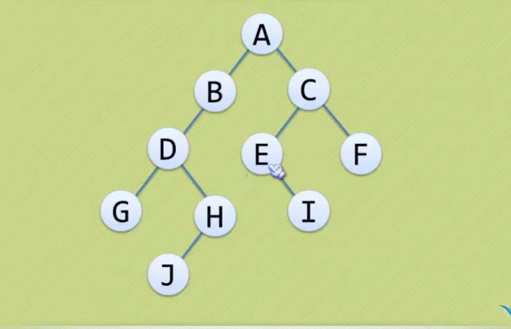
二叉树的特点
- 每个节点最多有两棵子树，所以二叉树中不存在度大于2的情况。（注意：不是都需要两棵子树，而是最多两棵，没有子树或者有一棵子树也都是可以的。）
- 左子树和右子树是有顺序的，次序不能颠倒。
- 即使树中某节点只有一棵子树，也要区分它是左子树还是右子树，下面是完全不同的二叉树：
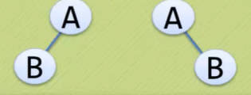
二叉树的五种基本形态
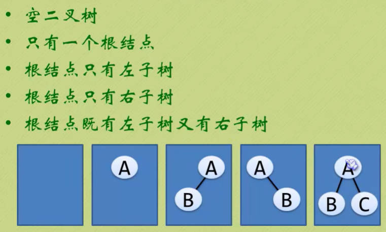
二叉树很二

特殊二叉树
- 因为他很二，所以他也很特殊。小甲鱼接下来再介绍一下一些特殊的二叉树，虽然暂时你可能不能理解它们的用处，但我们有必要先了解一下。
斜树
- 顾名思义，斜树是一定要斜的，但斜也要斜得有范儿，例如：
- 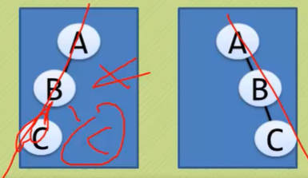
- 要么往左斜，要么往右斜，不能一会往左，一会往右。
满二叉树
- 坡坡有云：“人有悲欢离合，月有阴晴圆缺，此事古难全。但愿人长久，千里共婵娟。”意思就是说完美的那是理想，不完美的才是人生。
- 但是对于二叉树来说，是否存在完美呢？有滴，那就是满二叉树啦。
- 在一棵二叉树中，如果所有分支节点都存在左子树和右子树，并且所有叶子都在同一层上，这样的二叉树称为满二叉树。
- 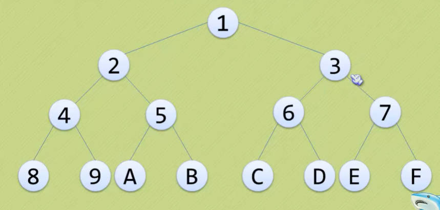
- 满二叉树的特点有：
- 叶子只能出现在最下一层
- 非叶子节点的度一定是2
- 在同样深度的二叉树中，满二叉树的节点个数一定最多，同时叶子也是最多。
- 满二叉树和完全二叉树历年都是一个重大考点，因为考生很容易混淆两者，但如果只是为了深入学习编程，那么只需要理解即可。记得我们曾说过：理解越多，需要记住的就越少！
- 对一棵具有n个节点的二叉树按层序编号，如果编号为i(1<=i<=n)的节点与同样深度的满二叉树中编号为i的节点位置完全相同，则这棵二叉树称为完全二叉树。
- 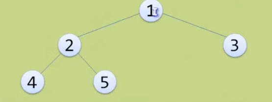
- 完全二叉树的特点有：
- 叶子结点只能出现在最下两层。
- 最下层的叶子一定集中在左部连续位置。
- 倒数第二层，若有叶子结点，一定都在右部连续位置。
- 如果节点度为1，则该节点只有左孩子。
- 同样节点数的二叉树，完全二叉树的深度最小。
- 注意：满二叉树一定是完全二叉树，但完全二叉树不一定是满二叉树。
- 以下这些都不是完全二叉树：
- 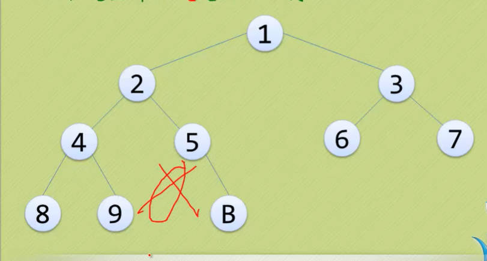
- 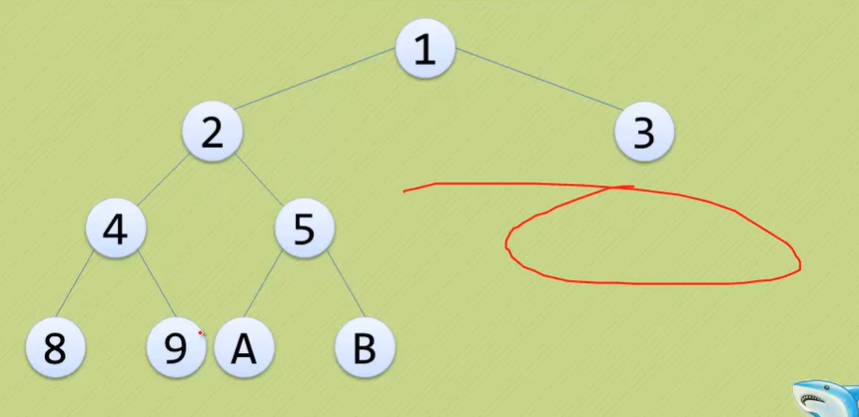
- 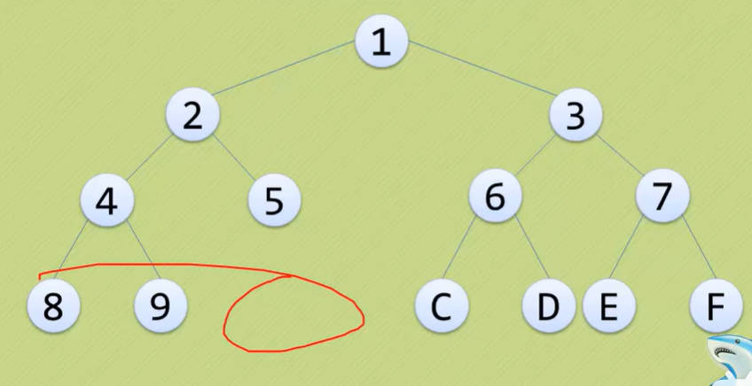
Day13
二叉树的性质
性质一：
在二叉树的第i层上至多有2^(i-1)个节点
- 这个性质其实很好记忆，考试的时候懂的画出二叉树的图便可以推出
性质二：
深度为k的二叉树至多有2^k-1个节点（k>=1）
- 这里一定要看清楚哦，是2^k再-1
性质三：
对任何一棵二叉树T，如果其终端节点数为n0，度为2的节点数为n2，则n0=n2+1
- 这个就比较困难了，需要推导获得
- 首先我们假设度为1的节点数为n1，则二叉树T的节点总数n=n0+n1+n2
- 其次我们发现连接数总是等于总结点数n-1，并且等于n1+2*n2
- 所以n-1=n1+2*n2
- 所以n0+n1+n2-1=n1+n2+n2
- 最后n0=n2+1
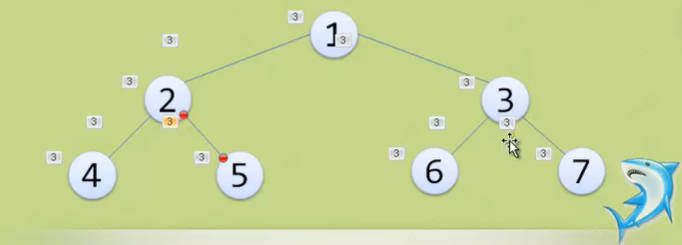
性质四：
具有n个节点的完全二叉树的深度为
$$
\lfloor\log_2n\rfloor+1
$$
由满二叉树的定义结合性质二我们知道，深度为k的满二叉树的节点数n一定是2^k-1
那么对于满二叉树我们可以通过n=2^k-1倒推出满二叉树的深度为
$$
log_2(n+1)
$$
由于完全二叉树前面我们已经提到，它的叶子节点只会出现在最下面的两层，我们可以同样如下推导：
-
那么对于倒数第二层的满二叉树我们同样很容易回推出它的节点数为n=2^(k-1)-1
-
所以完全二叉树的节点数的取值范围是：2^(k-1)-1 < n <= 2^k-1
-
由于n是整数，n <= 2^k-1可以看成n < 2^k
-
同理2^(k-1)-1 < n可以看成2^(k-1) <= n
-
所以2^(k-1) <= n < 2^k
-
不等式两边同时取对数，得到
$$
k-1<=log_2n<k
$$
由于k是深度，必须取整，所以
$$
k=\lfloor log_2n+1\rfloor+1
$$
性质五：
如果对一棵有n个节点的完全二叉树（其深度为）
$$
\lfloor\log_2n\rfloor+1
$$
的节点按层序编号，对任一节点i (1<=i<=n)有以下性质：
-
如果i=1，则节点i是二叉树的根，无双亲；如果i>1，则其双亲是节点
$$
\lfloor i/2\rfloor
$$ -
如果2i>n，则节点i无左孩子（节点i为叶子节点）；否则其左孩子是节点2i
-
如果2i+1>n，则节点i无右孩子；否则其右孩子是节点2i+1
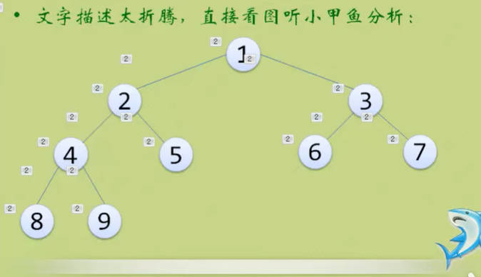
二叉树的存储结构
- 树结构在计算机中的存储形式很多，可谓天马行空任你创造，只要能够按照要求完成任务即可。
- 在前面的演示中，我们发觉很难单单只用顺序存储结构或者链式存储结构来存放。
- 但是二叉树是一种特殊的树，由于它的特殊性，使得用顺序存储结构或链式存储结构都能够简单实现。
- 二叉树的顺序存储结构就是用一维数组存储二叉树中的各个节点，并且节点的存储位置能体现节点之间的逻辑关系。
二叉树的顺序存储结构
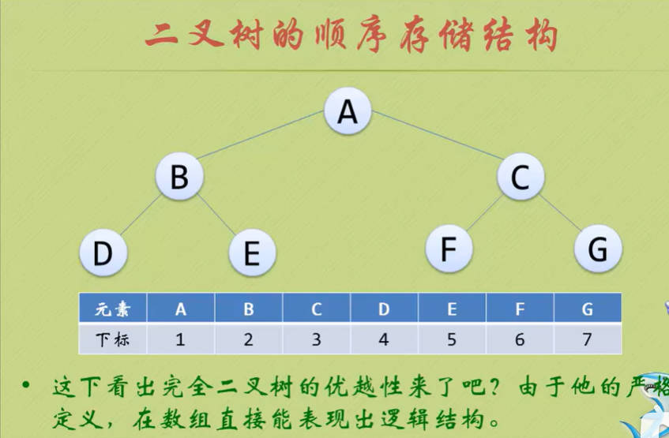
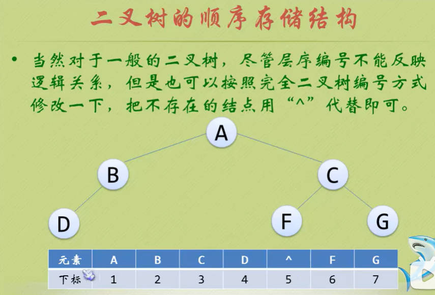
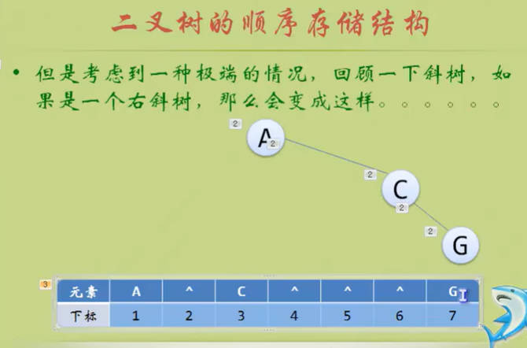
二叉链表
- 既然顺序存储方式的适用性不强，那么我们就要考虑链式存储结构了。二叉树的存储按照国际惯例来说一般也是采用链式存储结构的。
- 二叉树每个节点最多有两个孩子，所以为它设计一个数据域和两个指针域是比较自然的想法，我们称这样的链表叫做二叉链表。
- 以下是我们的二叉链表的节点结构定义代码：
1 | typedef struct BiTNode { |
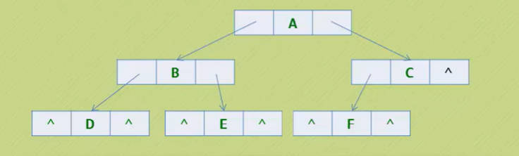
Day14
二叉树的遍历
-
二叉树的遍历 (traversing binary tree) 是指从根节点出发，按照某种次序依次访问二叉树中所有节点，使得每个节点被访问一次且仅被访问一次。
-
这里有两个关键词小甲鱼给加红了：次序和访问
-
二叉树的遍历次序不同于线性结构，线性结构最多也就是分为顺序、循环、双向等简单的遍历方式。
-
树的节点之间不存在唯一的前驱和后继这样的关系，在访问一个节点后，下一个被访问的节点面临着不同的选择。这就像我们的人生，漫漫长途上一步踏错，满盘皆输！
-
二叉树的遍历方式可以很多，如果我们限制了从左到右的习惯方式，那么主要就分为以下四种：
- 前序遍历
- 中序遍历
- 后序遍历
- 层序遍历
-
前序遍历：
- 若二叉树为空，则空操作返回，否则先访问根节点，然后前序遍历左子树，再前序遍历右子树。
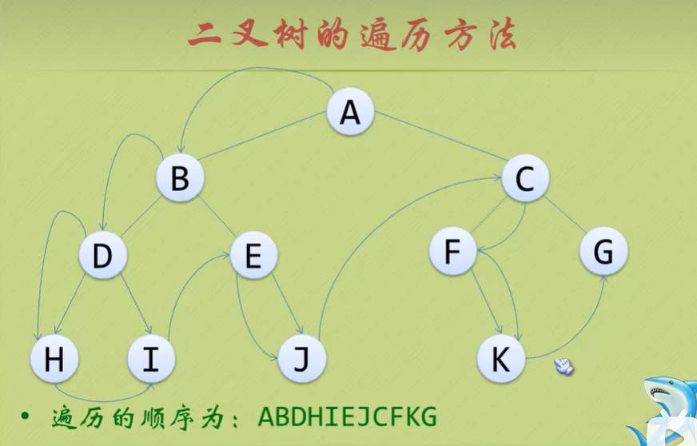
- 中序遍历：
- 若树为空，则空操作返回，否则从根节点开始（注意并不是先访问根节点），中序遍历根节点的左子树，然后是访问根节点，最后中序遍历右子树。
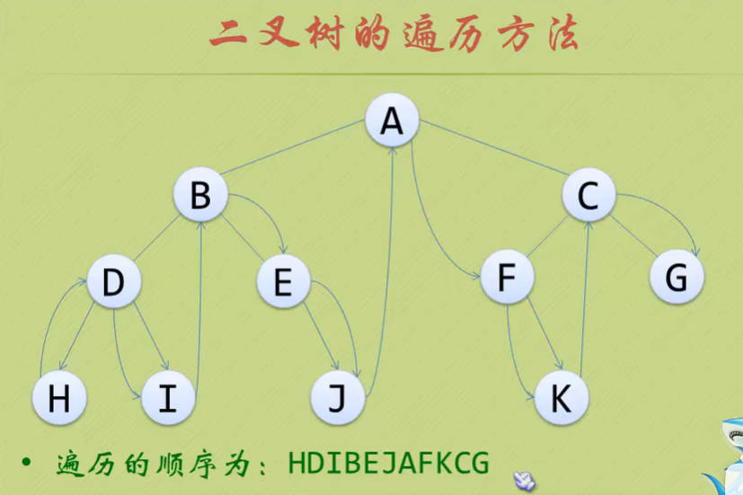
- 后序遍历：
- 若树为空，则空操作返回，否则从左到右先叶子节点的方式遍历访问左右子树，最后访问根节点。
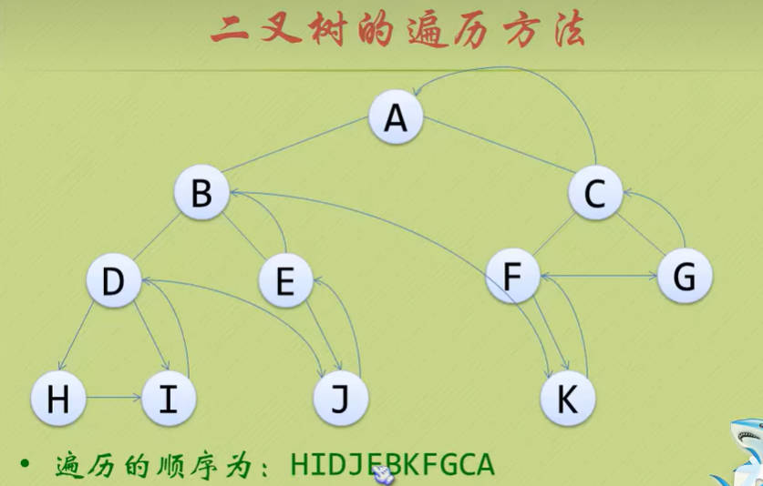
- 层序遍历：
- 若树为空，则空操作返回，否则从树的第一层，也就是根节点开始访问，从上而下逐层遍历，在同一层中，按从左到右的顺序对节点逐个访问。
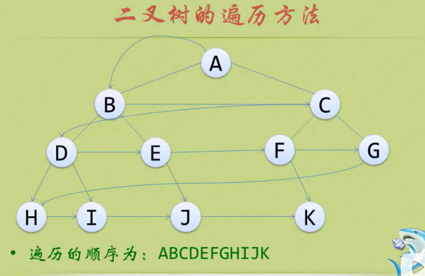
Day15
赫夫曼树
- 在数据膨胀、信息爆炸的今天，数据压缩的意义不言而喻。谈到数据压缩，就不能不提赫夫曼（Huffman）编码，赫夫曼编码是首个实用的压缩编码方案，即使在今天的许多知名压缩算法里，依然可以见到赫夫曼编码的影子。
- 另外，在数据通信中，用二进制给每个字符进行编码时不得不面对的一个问题是如何使电文总长度最短且不产生二义性。根据字符出现频率，利用赫夫曼编码可以构造出一种不等长的二进制，使编码后的电文长度最短，且保证不产生二义性。
赫夫曼树定义与原理
- 我们先把这两颗二叉树简化成叶子结点带权的二叉树（注：树节点之间的连线相关的数叫做权，Weight）。
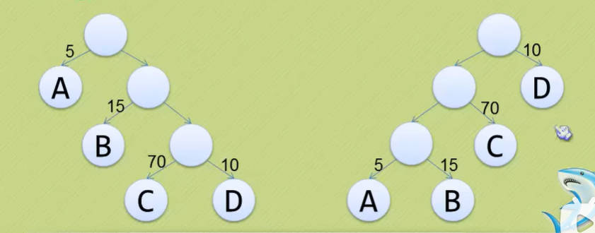
- 节点的路径长度：
- 从根节点到该节点的路径上的连接数。
- 树的路径长度：
- 树中各个叶子结点的路径长度之和。
- 节点带权路径长度：
- 节点的路径长度与节点权值的乘积。
- 树的带权路径长度：
- WPL (Weighted Path Length) 是树中所有叶子结点的带权路径长度之和。
- WPL的值越小，说明构造出来的二叉树性能越优。
- 那么现在的问题是，如何构造出最优的赫夫曼树（最优二叉树）呢？别急，赫夫曼大叔给出了我们解决的方案。
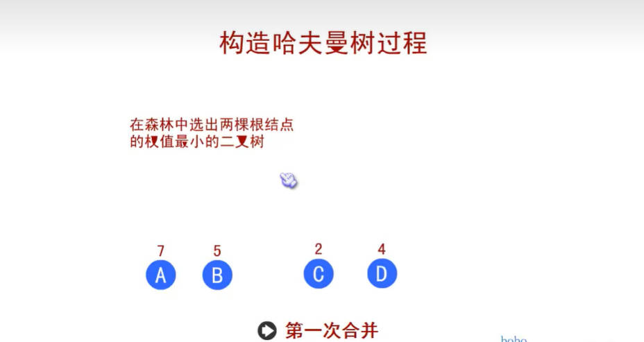
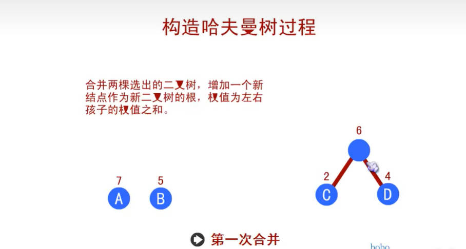

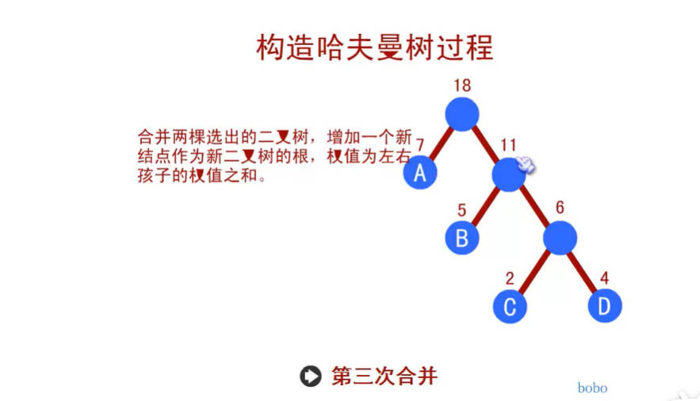
赫夫曼编码
-
上一节课我们已经谈了赫夫曼树的基本原理和构造方式，而赫夫曼编码可以很有效地压缩数据（通常可以节省20%~90%的空间，具体压缩率依赖于数据的特性）。
-
名词解释：定长编码，变长编码、前缀码
- 定长编码：像ASCII编码
- 变长编码：单个编码的长度不一致，可以根据整体字符出现频率来调节
- 前缀码：所谓的前缀码，就是没有任何码字是其他码字的前缀
-
理清思路：
- build a priority queue (权值从小到大排列)
- build a huffmanTree
- build a huffmanTable (存放哈夫曼的编码)
- encode
- decode
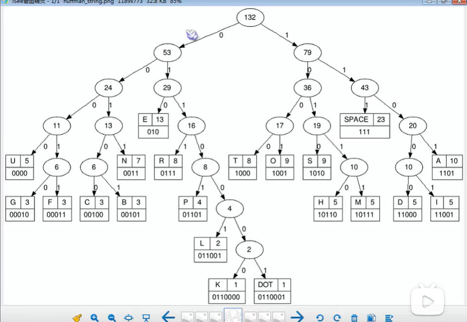
- 左子树都是用0来表示，右子树用1来表示，上图有些问题，忽略就好。
Day16
图
- 在前边讲解的线性表中，每个元素之间只有一个直接前驱和一个直接后继，在树形结构中，数据元素之间是层次关系，并且每一层上的数据元素可能和下一层中多个元素相关，但只能和上一层中一个元素相关。
- 但这仅仅都只是一对一，一对多的简单模型，如果要研究如人与人之间关系就非常复杂了。
- 万恶图为首，前面可能有些童鞋会感觉树的术语好多，可来到了图这章节，你才知道什么叫做真正的术语多！
图的定义
- 图（Graph）是由顶点的有穷非空集合和顶点之间边的集合组成，通常表示为：G(V, E), 其中，G表示一个图，V是图G中顶点的集合，E是图G中边的集合。
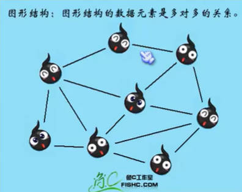
- 对于图的定义，我们需要明确几个需要注意的地方：
- 线性表中我们把数据元素叫元素，树中叫节点，在图中数据元素我们则称之为顶点（Vertex）。
- 线性表可以没有数据元素，称为空表，树中可以没有节点，叫做空树，而图结构在咱国内大部分的教材中强调顶点集合V要有穷非空。
- 线性表中，相邻的数据元素之间具有线性关系，树结构中，相邻两层的节点具有层次关系，而图结构中，任意两个顶点之间都可能有关系，顶点之间的逻辑关系用边来表示，边集可以是空的。
图的各种奇葩定义

图的顶点与边之间的关系

连通图

- 无向图中的极大连通子图称为连通分量。
- 注意以下概念：
- 首先是子图
- 连通子图含有极大顶点数
- 具有极大顶点数的连通子图包含依附于这些顶点的所有边
- 最后我们再来看连通图的生成树定义
- 所谓的一个连通图的生成树是一个极小的连通子图，它含有图中全部的n个顶点，但只有足以构成一棵树的n-1条边。（但不是满足此条件就是连通图的生成树）
Day17
图的存储结构
- 图的存储结构相比较线性表与树来说就复杂很多。
- 我们回顾下，对于线性表来说，是一对一的关系，所以用数组或者链表均可简单存放。树结构是一对多的关系，所以我们要将数组和链表的特性结合在一起才能更好的存放。
- 那么我们的图，是多对多的情况，另外图上的任何一个顶点都可以被看做是第一个顶点。
- 我们仔细观察以下几张图，然后深刻领悟一下：
（上面的四张图都是一样的）
- 因为任意两个顶点之间都可能存在联系，因此无法以数据元素在内存中的物理位置来表示元素之间的关系（内存物理位置是线性的，图的元素关系是平面的）。
- 如果用多重链表来描述倒是可以做到，但在几节课前的树章节我们已经讨论过，纯粹用多重链表导致的浪费是无法想象的（如果各个顶点的度数相差太大，就会造成巨大的浪费）。
- 所幸，前辈们已经帮我们想好了出路，我们接下来会谈图的五种不同的存储结构，大家做好准备哦~
邻接矩阵（无向图）
- 考虑到图是由顶点和边或弧两部分组成，合在一起比较困难，那就很自然地考虑到分为两个结构来分别存储。
- 顶点因为不区分大小、主次，所以用一个一维数组来存储是很不错的选择。
- 而边或弧由于是顶点与顶点之间的关系，一维数组肯定就搞不定了，那我们不妨考虑用一个二维数组来存储。
- 于是我们的邻接矩阵方案就诞生了！
- 我们可以设置两个数组，顶点数组为vertex[4]={V0, V1, V2, V3}，边数组arc[4][4]为对称矩阵（0表示不存在顶点间的边，1表示顶点间存在边）。
- 对称矩阵：所谓对称矩阵就是n阶矩阵的元满足a[i][j]=a[j][i] (0<=i, j<=n)。即从矩阵的左上角到右下角的主对角线为轴，右上角的元与左下角相对应的元全都是相等的。
- 有了这个二维数组组成的对称矩阵，我们就可以很容易知道图中的信息：
- 要判定任意两顶点是否有边无边就非常容易了
- 要知道某个顶点的度，其实就是这个顶点Vi在邻接矩阵中第i行（或第i列）的元素之和。
- 求顶点Vi的所有邻接点就是将矩阵中第i行元素扫描一遍，arc[i][j]为1就是邻接点咯。
邻接矩阵（有向图）
- 可见顶点数组vertex[4]={V0, V1, V2, V3}，弧数组arc[4][4]也是一个矩阵，但因为是有向图，所以这个矩阵并不对称，例如由V1到V0有弧，得到arc[1][0]=1，而V0到V1没有弧，因此arc[0][1]=0
- 另外有向图是有讲究的，要考虑入度和出度，顶点V1的入度为1，正好是第V1列的各数之和，顶点V1的出度为2，正好是第V1行的各数之和。
邻接矩阵（网）
邻接表（无向图）
- 邻接矩阵看上去是个不错的选择，首先是容易理解，第二是索引和编排都很舒服~
- 但是我们也发现，对于边数相对顶点较少的图，这种结构无疑存在对存储空间的极大浪费。
- 因此我们可以考虑另外一种存储结构方式，例如把数组与链表结合一起来存储，这种方式在图结构也适用，我们称为邻接表（AdjacencyList）。
- 邻接表的处理方法是这样：
- 图中顶点用一个一维数组存储，当然，顶点也可以用单链表来存储，不过数组可以较容易地读取顶点信息，更加方便。
- 图中每个顶点Vi的所有邻接点看成一个线性表，由于邻接点的个数不确定，所以我们选择用单链表来存储。
邻接表（有向图）
Day18
图的遍历
树的遍历我们谈了四种方式，大家回忆一下，树因为根节点只有一个，并且所有的节点都只有一个双亲，所以不是很难理解。
但是谈到图的遍历，那就复杂多了，因为它的任一顶点都可以和其余的所有顶点相邻接，因此极有可能存在重复走过某个顶点或漏了某个顶点的遍历过程。
对于图的遍历，如果要避免以上情况，那就需要科学的设计遍历方案，通常有两种遍历次序方案：它们是深度优先遍历和广度优先遍历。
深度优先遍历
- 深度优先遍历（DepthFirstSearch），也有称为深度优先搜索，简称为DFS。
- 它的具体思想类似于课程开头讲的找钥匙方案，无论从哪一间房间开始都可以，将房间内的墙角、床头柜、床上、床下、衣柜、电视柜等挨个寻找，做到不放过任何一个死角，当所有的抽屉、储藏柜中全部都找遍，接着再寻找下一个房间。
- 现在大家一起来想办法走以下这个迷宫，要求
- 我们可以约定右手原则：在没有碰到重复顶点的情况下，分岔路口始终是向右手边走，每路过一个顶点就做一个记号。
- 接下来有请小甲鱼童鞋带我们走迷宫去。
- 迷宫走完了，所有的顶点也遍历过了，这就是深度优先遍历！
- 反应快的童鞋一定会感觉深度优先遍历其实就是一个递归的过程嘛~
（只看蓝色线，前序遍历）
广度优先遍历
（只看右边蓝色线，层序遍历）
 wechat
wechat alipay
alipay